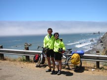
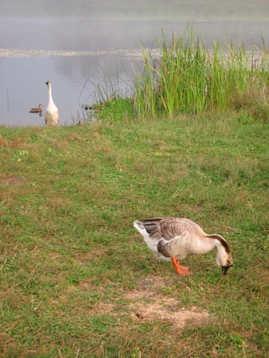
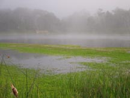
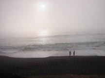
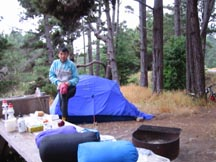
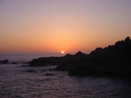
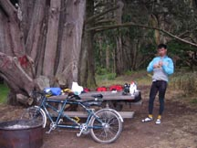
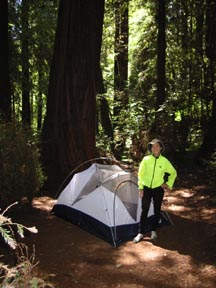

Our
5-day Tour Down the Northern California Coast
June 29 - July 3, 2002
It was our first fully loaded tour on the tandem, though I had done the ride years before on the single.
We were dropped off on Saturday, June 29th 2002 in Leggett at the intersection of Highway 101 and Highway 1. After unloading the bike and putting the panniers on it, we proceeded to climb Leggett hill. Lisa had crashed on Tuesday, so she was sporting no less than 4 patches of second skin on her body, and was sore to boot. Off the bike, she would limp around, but for some reason, cycling was fine, except for the occasional stop to adjust the bandages.
It was sunny and warm, but the climb was shaded, so we made good progress until the top, where we rested and Lisa dropped her gloves. Two men on Harley Davidson motorcycles saw her drop her gloves and caught up to us with them. The descent on Leggett hill was gentle and long. As anticipated, the 4 panniers gave us enough aerodynamic drag that no drum brake or disc brake was necessary to keep our speed below 40mph---even without braking, we simply could not go fast.
We reached Rockport, and there, discovered that the hill was about a mile longer than the guidebook said. (This is apparently a persistent theme among cyclists using Kirkendall and Spring's "Bicycling the Pacific Coast") The last time, of course, I was using the same book but didn't notice because on a single bike Rockport hill didn't bother me at all. At last, we reached the coast, with just a hint of blue sky left --- all around us the coast had turned gray and misty.
A quick lunch at the West port grocery, where we bought dinner just in case we were too tired to ride into Fort Bragg, and we made it into MacKerricher State Beach at 4:00pm. The sign said the campground was full, Lisa pointed out, and I said, "Not for us." Sure enough, the hiker-biker site was available, and we were charged $2. $1 per person. Just 5 years ago, it was $3 a night a person, so prices had gone down quite nicely. A rare case of reverse inflation.
We pitched tent, and took a shower. After the shower, Lisa was in too much pain to consider cycling to Fort Bragg, so we made dinner. Prior to the trip, I had acquired a Titanium pot and one of those alcohol pop-can stoves, a pot holder and wind-screen. Now was a good time to see how well it worked. The answer was: it worked quite well, but I was a fool for thinking I could do a 5 day trip on 8 ounces of fuel. (I had anticipated only make hot water for breakfast and dinner, not cooking) We used about 3 ounces the first evening alone boiling water for the Bombay Potatoes, which were quite good.
We washed our clothes, put up a clothes line, and then other cyclists joined us. Colin & Hawkin, two freshly graduated high schoolers who had ridden from Astoria, Oregon, and Ron, Hawkin's in-law who was just riding with them for the weekend. We chatted for a bit, and then took a short walk along the beach, which was quite pretty, though cold.
Day 2 started off bright and sunny and stayed that way. We rode into Fort Bragg for Brunch at the Egghead, my favorite Omelet place on the Pacific Coast, bought more second skin, and then headed to Mendocino for ice cream. The ice cream must have been the last straw, for as we saddled up to ride on, I noticed a wobble from the rear rack, and looked and sure enough, the left eyelet that the rack attached to had broken off from the frame! Now, I had bought our Co-Motion SkyCapp used, but the couple that previously owned it had never used the eyelets, relying on a BOB trailer indeed. Later on, John Tellerico of the Bicycle Outfitter would confirm that the eyelets looked like they had never been brazed properly. If I was an original owner, I would have been really mad. As it was, I cursed at the bike and rode to the nearest hardware store (on the highest hill in Mendocino, of course), bought some duct-tape, and proceeded to tape up the rack to the frame. I figured that the other eyelet would die sooner or later as well, but for the moment everything seemed to work.
We rode on towards Manchester State Beach. This section of the coast featured beautiful sea-stacks, lovely rock formations, not too much traffic, and the steepest climb on the Pacific Coast, although reasonably short. I was discovering that tandem loaded touring was tough! While on my single I would end the day still full of energy, on the tandem after 40 miles I was ready to crawl into the tent and sleep. Nevertheless, we made it to Manchester State Beach, though again, it was longer than anticipated. (Even the milepost information in the book was wrong) Rather than stay in the showerless State Beach, I had persuaded Colin and Hawkin that the KOA next to the state park would have been a better idea. The last time I was at the KOA, sites were $24 each, and we fit 6 cyclists in at $4 each. This time, sites were $30, with a $5 a person surcharge above two people, so it turned out to be a $10 a person night. Still, this turned out to be a good idea as Colin had crashed just two miles before making the site, pretzeling the wheel, and causing severe road rash all along his right side. I was by this time an unfortunate expert on "moist wound care", so I offered him neosporin, bandages, and second skin, but Colin didn't trust my care, so he toughed it out with Gauze bandages and a good scrubbing instead.
We made dinner for the boys, and by the time we were done, were so tired we didn't bother walking to the beach before turning in.
Day 3 started off sunny and with a strong tail wind. The miles flew by, and we made Gualala (20 miles) before noon, where we had lunch. After lunch, however, the wind stopped and the tandem crawled. Sea Ranch, in particular, was a nasty town, big SUVs, drivers with fast cars, and heavy traffic. We passed an accident which had all the traffic stopped, however, though we were waved through, being small enough to fit in what's left of the open road. Apparently, a minivan and a Mercedes (or a BMW, one of those European cars) had been involved in a head-on collision, and one person had to be heli-evac'd. I didn't look at the collision remnants but Lisa did and was quite impressed. At least there was no more traffic past the accident. We made Stewart's point (31 miles) at about 1:30pm and had ice-cream. Lisa and I were last there in May as part of a 65 mile ride starting from Duncan Mills. At that time, there was a big tail-wind which made this part of the ride enjoyable and fun. (Well, there was also a steep 3000' climb prior to Stewart's point and no load to carry, which made a big difference in terms of performance) This time, though it was still sunny, the wind had died, so we ate an ice-cream here, and debated what to do. The last time I had done this ride, the ride between Fort Ross and Jenner in the late afternoon in blazing heat had me exhausted, and Bodega Dunes State Park was not too friendly a place, either. I had hoped to just make Jenner and find a motel of some sort, but in this heat, I gave up on the idea and suggested a stop at Stillwater Beach Campground instead.
We made that with very little ado, and along the way bought a cold dinner so we didn't burn any more precious fuel. Stillwater's hiker biker site wasn't as nice as the others, and cost a whopping $3 a person a night instead. While preparing for a shower, another cyclist showed up, Ken. Ken was preparing for a cross-country trip, and so had done a 2 week loop up to the Sierras and then down the coast to prepare. He was strong, riding about 60-70 miles a day. Luckily for us, he had a whole quart of alcohol fuel, and only had 2 days of riding left, so he filled up my pathetic fuel bottle back to 8 ounces, and we had pleasant conversation the entire evening, except for a short visit to the cliff to watch the lovely sunset.
Day 4 started off quite well. Lisa looked at me in the morning and said, "Notice anything different?" I shook my head. "I'm not limping any more!" Sure enough, her wounds had all gotten better, and there was clearly new skin where the road-rash had been. Riding the bike, however, was a different story. There was a head-wind, and all around us was cold and misty. There wasn't much to be seen of the coast at all, but at least, the wind made the climbs a bit more pleasant, cooling us off. We negotiated the trip to Jenner without any issues, but once we got into Sonoma county, the traffic started getting crowded. Trucks would pass by without giving us much room, and once, the local police drove by with their loud-speakers telling us to keep to the side of the road. I was hoping to make Tomales today, but given the conditions and the friendly-nature of the locals decided to call it a day and camp out at Bodega Dunes State Park instead.
I have bad memories of the Bodega Dunes State Park Campgrounds because the hiker-biker site was quite sandy. That proved to be true. However, it turned out that there was a less sandy spot quite secluded away from the main hiker-biker site, and we pitched our tent there and successfully kept sand away from our sleeping bags. It was still early, since we had done all of 25 or 30 miles that day (depending on who you ask, other cyclists or Kirkendall and Spring), so we rode into town for lunch, shopped and bought groceries, and did all the things that cyclists did when given a day off. We decided we would eat dinner at 5:00pm.
Dinner was at "The Tides" restaurant in Bodega Dunes. This was where Alfred Hitchcock's "The Birds" was filmed. The mist outside the restaurant windows with 'nary a boat in sight set the mood.
We returned to camp in time to run into Colin & Hawkin again, who had built a new wheel and rode all the way from Manchester State Beach against a head-wind. The strength and vigor of the young never fail to impress me. An hour later, two more cyclists showed up, Rudy and Veronica, who had spent the previous night in Gualala, and had played leap-frog with Colin & Hawkin all through their trip. This pair of Monterey residents started their ride in Victoria, Canada, and were on a 3 week trip. Rudy was set to stay in Bodega Dunes another night but I told him that Samuel P Taylor State Park was a much better campground. Rudy and Veronica were very efficient from their days spent on the road --- I estimate their setup and teardown time at less than 1/2 an hour. Lisa and I might manage to do either in an hour, if we were determined and organized.
Day 5 started off iffy. It was still cloudy and misty, but there was at least no headwind. We set off at 9:50am, and got out of Sonoma county by 10:45, which was none too soon for me. Once in Marin county, not only was the traffic lighter, what there was was friendlier as well, with "Share the Road with Bicyclists" signs every 5 or 10 miles or so. We made Point Reyes Station at 1:30pm, after playing leap-frog with Colin & Hawkin for a bit, and stopping every hour or so for scenery, food, and water. The terrain was quite hilly, but none of the climbs were severe, and the rolling hills allowed me to not brake at all on the downhills.
At Point Reyes Station, we stopped for 2 hours, eating a big lunch, and buying groceries for the night and morning. I was again running out of fuel (it turned out that 12 ounces of fuel won't totally do for 5 days), so we decided to have a cooked dinner and have cold cereal for breakfast. We ran into Rudy and Veronica again at the grocery store, and exchanged information about what to get for groceries.
Once out of Point Reyes Station, Olema was a short, flat 5 miles away. Then a left turn on Sir Francis Drake brought us up a long hot climb that took about 45 minutes to do. (Or at least, it felt that way) After that, we were home free, or so I thought, but 100 yards past the summit, we heard the rear tire screaming. I brought the bike to a halt and determined that it was the rear tire rubbing against the fender. A further investigation revealed that the other dropout eyelet had also separated from the frame. I duct-taped that, but the screaming wouldn't go away. At this point, we were only 4 miles away from Samuel P. Taylor State Park, so we got onto the bike path into the park, and Lisa did her "lift the rear rack with my arms" stoker-trick to get us 2 miles further in, where we ran into a park ranger driving a pickup truck who graciously carried our rack assembly, rear panniers and tent into the hiker biker site for us.
I cannot recommend Samuel P. Taylor State Park enough, not just for the friendliness of the rangers, but also the beauty of the hiker biker site. You pitch your tent in the middle of a grove of about 6 or 7 redwood trees. It is a superior camp-site in all ways. And showers there are now free!
At this point, I had naught to do but to pay our $2, and call my brother to ask for a pick-up the next day. We were near the end of our tour anyway, since we had intended to be picked up after crossing the golden gate bridge. Rudy offered to tie the rack/fender/panniers to his Bob trailer and haul it up to the bridge for us, but I didn't want to make anyone ride through the remaining busy city streets with more weight.
So our trip ended there, not unhappily, since Samuel P Taylor State Park was still my favorite hiker biker site on the coast, and we still got to meet interesting people, and sleep in. It will cost us about $60 to braze-on new, beefier braze-ons to tie the rack to (thanks to the Bicycle Outfitter), so the damage wasn't too expensive, though if I had been on a longer tour, I would have been livid and asking for my money back from the manufacturer.
-By Piaw Na
Equipment Summary
Thumbs up: Alcohol pop can stove (bring at least a 16
ounce fuel bottle, since that's the minimum size of denatured alcohol
fuel that I could find at various hardware stores along the coast), Continental
Top Touring Tires, and Second Skin Moist Wound Care patches. Bruce Gordon
Racks mated with Robert Beckman Panniers worked like the classics that
they were. Our new Sierra Designs Orion CD tent (a replacement for my
10 year old North Face Tadpole) saw it's first touring use on this trip
as well, and worked well. The
attic-attachment comes highly recommended. It weights two ounces, and
provides hanging space for wet clothing on those nights when it's too
misty/rainy to bother hanging clothing out on a clothes-line.
Thumbs down: Frame-breakage. In 9 years of touring this was the first time I had a frame break. Considering that the bike has only seen a rear rack in active use for one year and a half, I'm disappointed. On the other hand, I'm glad that this happened on a relatively short tour, as opposed to a longer trip. If a part is going to fail, I want it to fail quickly, and non-catastrophically, and given that we could limp in on duct-tape and luck, things weren't too bad.

Click photo to enlarge (391K)
{kind=link}
First view of ocean out of Leggett Hill

Click photo to enlarge (280K)
{kind=link}
Lake by MacKerricher State Beach

Click photo to enlarge (376K)
{kind=link}
Lake by MacKerricher State Beach

Click photo to enlarge (22K)
{kind=link}
Misty sunset at MacKerricher State Beach
{kind=link}
Click photo to enlarge (390K)
Mendocino coast

Click photo to enlarge (438K)
{kind=link}
Stillwater Hiker Biker site

Click photo to enlarge (257K)
{kind=link}
Sunset at Stillwater

Click photo to enlarge (183K)
{kind=link}
Bodega Bay Dunes Hiker Biker site

Click photo to enlarge (164K)
{kind=link}
Piaw's favorite spot at
Sam Taylor hiker biker site
{kind=link}
Click photo to enlarge (448K)
Breakfast with our new cycling friends - Jeff, Achilleus, Rudy, and Veronica
{kind=link}
Click photo to enlarge (389K)
{kind=link}
Click photo to enlarge (255K)
Veronica and Rudy
{kind=link}
{kind=link}
{kind=link}